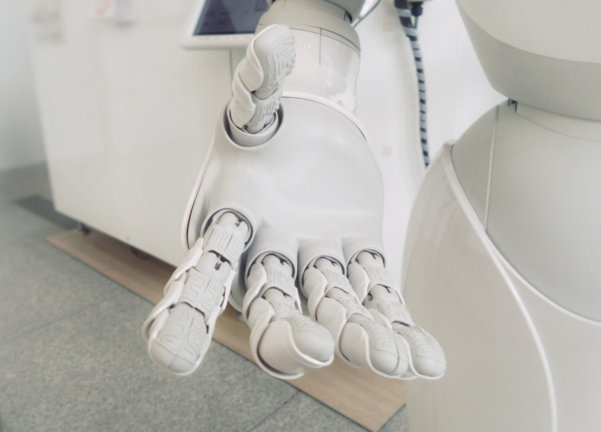
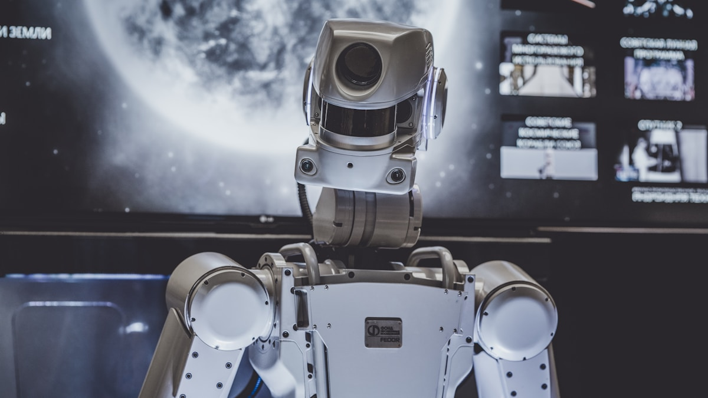

Définition
L'intelligence artificielle désigne l'ensemble des techniques qui permettent à une machine d'analyser des données, d'apprendre, de reconnaître des formes et d'aider à la prise de décision.
Elle ne remplace pas simplement une action humaine : elle automatise des tâches complexes comme la traduction, le diagnostic assisté, la recommandation de contenus, la détection de fraudes ou la conduite autonome.

Types d'intelligence artificielle
IA faible
L'IA faible est conçue pour accomplir une tâche précise. Les assistants vocaux, les moteurs de recommandation et les filtres anti-spam appartiennent à cette catégorie.
IA générale
L'IA générale serait capable de transférer ses connaissances entre plusieurs domaines comme un être humain. Elle reste aujourd'hui un objectif théorique.
IA superintelligente
Ce concept imagine une IA dépassant largement les capacités humaines. Il soulève des questions éthiques, sociales et de sécurité.

Technologies clés
- Machine learning : algorithmes qui apprennent à partir de données.
- Deep learning : réseaux de neurones profonds utilisés pour les images, le texte et la voix.
- Traitement du langage naturel : compréhension et génération de texte.
- Vision par ordinateur : analyse d'images, de vidéos et de scènes visuelles.
- Robotique : intégration de l'IA dans des machines physiques.

Applications et enjeux
L'IA est utilisée dans la santé pour aider au diagnostic, dans le transport pour optimiser les trajets, dans la finance pour repérer les fraudes et dans l'éducation pour personnaliser l'apprentissage.
Ses limites doivent aussi être étudiées : biais dans les données, protection de la vie privée, responsabilité des décisions automatisées, sécurité des systèmes et impact sur certains métiers.